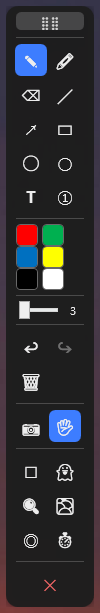
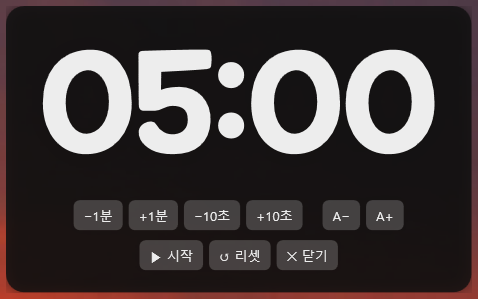
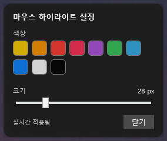

화면 위 어디에든 그리고 주석하는 무설치 항상-위 오버레이 도구 · Windows 10/11
v0.3 · 단일 실행파일 · 설치 불필요ScreenPen Portable은 바탕화면·발표 슬라이드·영상·웹·앱 어떤 화면 위에든 즉시 펜·도형·텍스트로 주석을 그리는 도구입니다. 필요하면 화면을 통과(click-through)시켜 아래 앱을 그대로 조작할 수 있고, 설치 없이 실행파일 하나로 동작합니다.
이 앱은 무설치(Portable)입니다. 실행파일을 더블클릭만 하면 됩니다. 설치·관리자 권한·레지스트리 변경이 필요 없습니다.
| 형태 | 크기 | 특징 | 추천 |
|---|---|---|---|
| 자체 포함 (self-contained) |
약 71 MB | .NET 런타임까지 내장 → 아무 PC·USB에서 바로 실행 | 처음 보는 PC, USB 휴대 |
| 런타임 의존 (framework-dependent) |
약 1.6 MB | 가볍지만 대상 PC에 .NET 9 Desktop Runtime 필요(1회 설치) | 내 PC들, 용량이 중요할 때 |
ScreenPenPortable.exe 한 개를 USB나 다른 PC 폴더(바탕화면 등)에 복사settings.json은 exe 옆에 자동 생성 → USB에 넣으면 설정도 함께 이동합니다.dotnet publish src/ScreenPenPortable -c Release -r win-x64 --self-contained true ` -p:PublishSingleFile=true -p:IncludeNativeLibrariesForSelfExtract=true ` -p:EnableCompressionInSingleFile=true
런타임 의존(소형)으로 만들려면 --self-contained false 로 바꾸면 됩니다.

이 부분을 잡고 끌면 툴바를 어디로든(다른 모니터 포함) 옮길 수 있습니다. 위치는 종료 시 저장됩니다.
그리기 모드에서는 화면에 그림이 그려지고, 통과 모드에서는 입력이 아래 앱으로 통과되어 그려둔 주석을 유지한 채 데스크톱을 조작할 수 있습니다. (✋ 버튼으로도 전환)
툴바를 숨기고 단축키만으로 사용합니다. 발표·녹화 시 화면을 깔끔하게. 돌아오기: Ctrl+Alt+G 다시 누르기
불투명 흰색/검정 배경을 깔아 그 위에 주석합니다. 누를 때마다 끄기 → 화이트 → 블랙 → 끄기 순환.
그린 선이 잠시 후 자동으로 사라집니다(임시 강조용). 끄면 남아있던 선은 원래 진하기로 복원됩니다.
커서 주변 화면을 확대해 보여 줍니다. 같은 키나 🔍 버튼으로 끕니다(토글).

발표·시험·휴식 시간 표시용 큰 카운트다운 타이머입니다. 화면 정중앙에 표시됩니다.
−1분 / +1분 / −10초 / +10초A− / A+ (변경해도 중앙 유지)패널 빈 곳을 드래그하면 위치를 옮길 수 있습니다(옮기면 자동 중앙정렬 해제).
마우스 커서 주위에 강조 원을 띄워 발표 중 포인터 위치를 부각합니다. 같은 키나 ◎ 버튼으로 켜고 끕니다.

아래 키는 다른 앱을 쓰는 중에도 동작합니다(전역). 모두 Ctrl+Alt와 함께.
| 키 | 동작 | 키 | 동작 |
|---|---|---|---|
| Ctrl+Alt+D | 그리기 ↔ 통과 | Ctrl+Alt+S | 스크린샷 |
| Ctrl+Alt+1/2/3 | 펜 / 하이라이터 / 지우개 | Ctrl+Alt+T | 툴바 표시/숨김 |
| Ctrl+Alt+Z / Y | 실행취소 / 다시 | Ctrl+Alt+W | 화이트보드/블랙보드 |
| Ctrl+Alt+E | 전체 지우기 | Ctrl+Alt+G | 고스트 모드 |
| Ctrl+Alt+M | 돋보기 | Ctrl+Alt+F | 페이딩 잉크 |
| Ctrl+Alt+H | 마우스 하이라이트 | Ctrl+Alt+C | 타이머 |
| Ctrl+Alt+Q | 종료 | Esc | 그리던 도형/텍스트 취소 |
| Delete | 전체 지우기 | Shift+드래그 | 도형 각도/비율 보정 |
settings.json에 저장되어 USB로 함께 이동합니다.